Boker
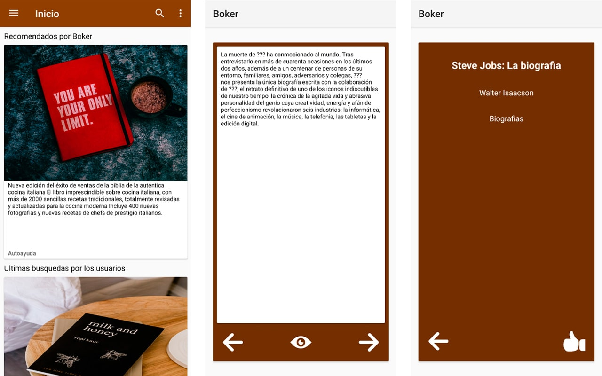Introducción
Descripción de la aplicación
Boker es una App para descubrir libros que le interesen al usuario, de la misma manera que la App de Tinder.
El usuario tendrá que registrarse en la App. Después de su registro, le mostrará algunas recomendaciones de sinopsis de libros. Para descubrir un libro que le interese al usuario, habrá una serie de categorías, por ejemplo, los más leídos, lo más gustados, libros que han salido en películas, etc. o por su género, si son biografías, novelas románticas, cuentos, etc.
Al elegir la categoría, se mostrarán solamente las sinopsis de los libros, el usuario lo leerá y si le gusta, puede ver qué libro es y guardarlo como favoritos.
También el usuario puede escanear el código de barras o poner el ISBN de un libro para buscarlo y ponerlo en la lista.
Objetivos y motivación
El objetivo de esta aplicación es hacer que los lectores no
juzguen por la caratula de un libro o por el autor del mismo.
Si con la sinopsis del libro, ese lector le gusta, puede
descubrir libros que no ha leído y descubrir si le gusta un nuevo
género literario.
Análisis
Descripción de los requisitos funcionales y no funcionales.
Requisitos funcionales
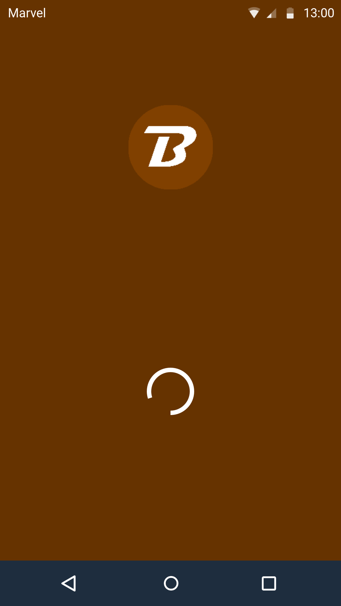
Al iniciar la App, aparecerá una pantalla de carga. Esta pantalla
de carga hará la conexión del usuario a la base de datos para
cargar la lista de libros y se mostrará la actividad principal.
Si
es la primera vez, se mostrará la actividad de bienvenida del
usuario y poder registrarse o iniciar sesión.
Si el usuario
no tiene conexión a internet, se mostrará un aviso de que no tiene
conexión.
En esta actividad, el usuario elegirá si registrarse si no tiene una cuenta de Boker o Iniciar sesión.
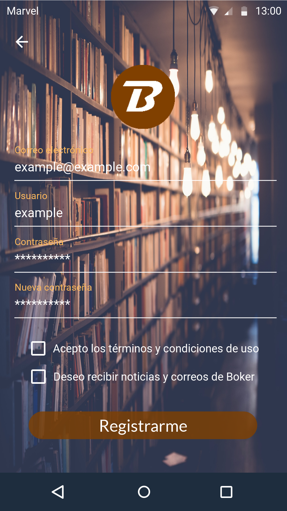Esta es la pantalla de registro que pedirá el email del usuario, el nombre de usuario y la contraseña.
Habrá dos CheckBoxs que uno consistirá en aceptar los términos y condiciones de uso, que habilitará el botón de Registrarse y otro si desea recibir noticias (Notificaciones) y correos de Boker.
Esta pantalla es la de iniciar sesión, que pedirá el usuario o
email y la contraseña.
Habrá un enlace abajo si el usuario al
olvidado la contraseña.
Esta pantalla es la actividad principal de la aplicación.
Se
mostrarán algunos apartados, como recomendaciones, ultimas
búsquedas de los usuarios, etc.
Al darle un toque a una sinopsis del libro, le llevará a la actividad de la sinopsis del libro.
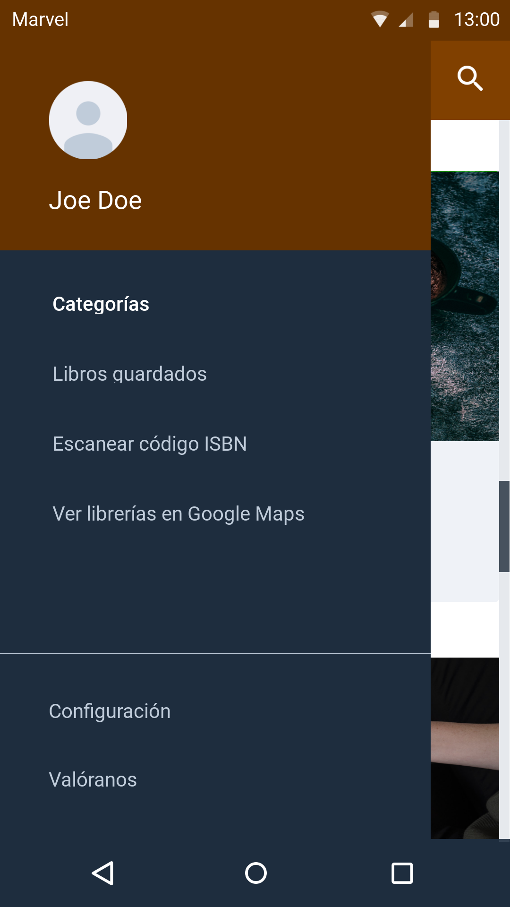Si abrimos el menú principal, vemos que tenemos varios apartados.
- Categorías.
- Libros guardados.
- Escanear código ISBN.
- Ver librerías en Google Maps.
En esta pantalla, estará las categorías. Se mostrarán las 4
principales importantes, lo más leídos, los más vendidos, …
Si
vamos más para abajo, vemos por género, novelas, biografías,
cuentos, fábulas, etc.
Si abrimos una categoría, se mostrarán sinopsis de un libro aleatorio, el usuario podrá leer la sinopsis y puede hacer dos cosas, pasar a otra sinopsis de otro libro (flecha Siguiente) o ver el libro (Icono Ojo).
Si el usuario ha querido ver qué libro es, el usuario puntúa que el libro parece ser recomendable, ya que ha captado la atención de un lector.
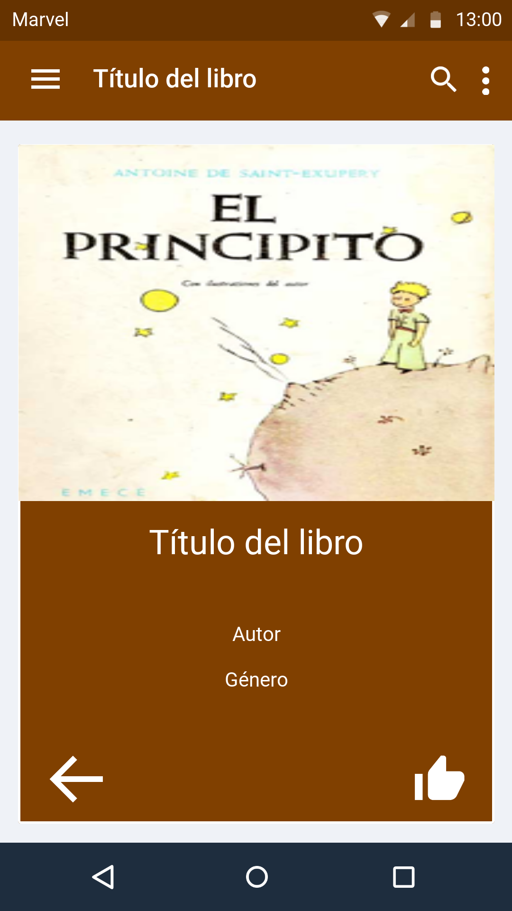Esta es la pantalla que muestra el libro, su portada, el título del libro, su autor y su género.
Aquí el usuario puede hacer dos cosas, o retroceder (flecha retroceder) que volverá a otra sinopsis de un libro o darle a me gusta (dedo Me Gusta) que guardará en libros guardados.
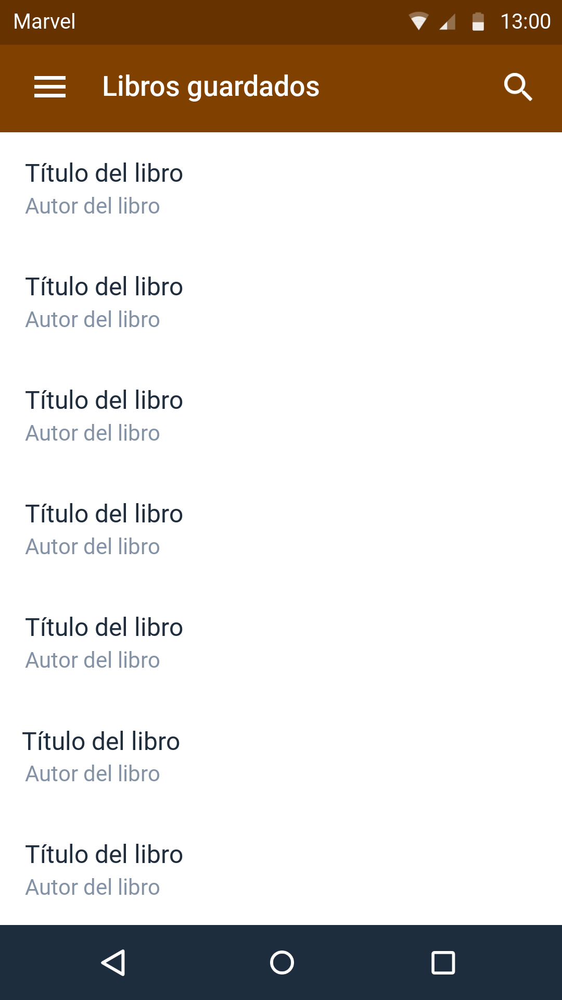
Esta es la pantalla de los libros guardados que el usuario pulsa
el botón Me Gusta.
Se muestra una lista de todos los libros
que le ha gustado.
Si el usuario pulsa Escanear código ISBN, se abrirá la cámara y tendrá que escanearlo.
Al escanear el libro, saldrá la información de este y podrá guardarlo en Libros guardados.
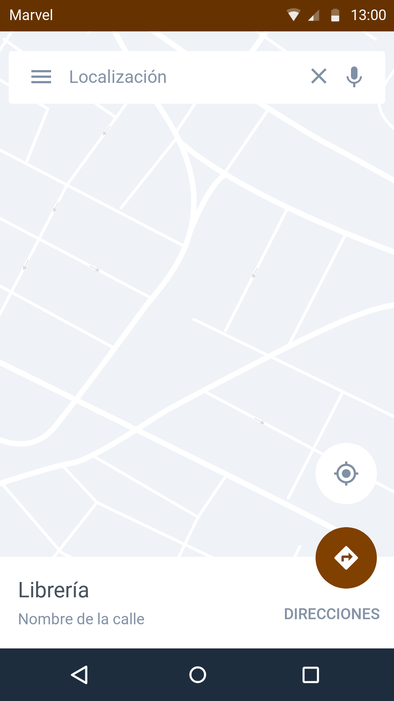Esta es la pantalla al abrir Google Maps en Boker, saldrá en mapa, las librarías más cercanas del usuario.
Requisitos no funcionales
La App debería de funcionar en Android 4.4 KitKat o superior. El dispositivo debe tener una pantalla de 5 pulgadas con 720 x 1280 pixeles, con geolocalización y conexión a Internet para la conexión del usuario que estará almacenado en una base de datos, como también sus libros guardados.
Planificación
Sprint 0
En este proyecto, la App usará las siguientes tecnologías:
- Firebase Authentication, para la Autenticación de usuarios en la App. En ella, se guardará el email y la contraseña de usuario. La contraseña vendrá cifrada.
-
Firebase Database, la base de datos de Boker, el Backend. En la
base de datos se guardará la siguiente información:
- User: IDUser {email, IDUser, userName}
- Books: ISBN {authorBook, genreBook, ISBN, nameBook, synopsisBook}
- Listbook: IDListBook {IDListBook, IDUser, books{ID{authorBook, genreBook, ISBN, nameBook, synopsisBook} }}
- OneSignal, para las notificaciones Push de la App. En ella se enviará automáticamente una notificación al usuario de que abra la App en busca de nuevos libros.
- Zxing Barcode Scanner La App tendrá una opción de escanear el código de barras ISBN de un libro, verificando si es un ISBN y si lo es, mostrará una Actividad para añadir el libro a la base de datos de Boker.
- Google Maps: La App tendrá una opción para ver el Mapa de Google, mostrando su ubicación real.
Sprint 1
La App tendrá las siguientes Actividades:
SplashScreen:rortegag.boker/SplashScreen.class
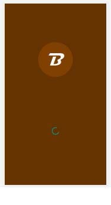Esta actividad es el laucher de la App. El usuario tendrá que esperar 5 segundos para ir a la siguiente actividad WelcomeScreen, a no ser que el usuario no tenga conexión a Internet.
WelcomeScreen: rortegag.boker/WelcomeScreen.class
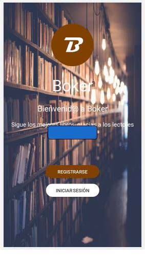En esta Actividad se mostrará una pantalla de bienvenida de la App y contendrá dos botones: Registrarse: Este botón hará un Intent a otra actividad, SignUpScreen. Iniciar sesión: Este botón hará un Intent a otra actividad LoginScreen.
SignUpScreen: rortegag.boker/SignUpScreen.class
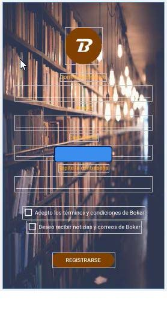En esta Actividad se mostrará 4 EditText donde el usuario tendrá que meter los siguientes datos:
- Usuario: Tendrá que meter el nombre de usuario.
- Correo electrónico: Tendrá que meter el correo electrónico del usuario.
- Contraseña: La contraseña del usuario:
- Repetir contraseña: Para comprobar la contraseña esté introducida bien.
También tendrá dos checkbox,una para Aceptar los términos y
condiciones y otro para recibir noticias.
Un botón, que será
para registrar los datos del usuario al backend.
LoginScreen: rortegag.boker/LoginScreen.class
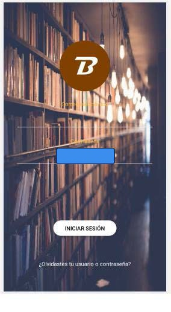
En esta Actividad contendrá dos EditText, uno para el correo
electrónico de usuario y otro para su contraseña.
Más abajo
tendrá un botón donde puede iniciar sesión en la App, conectándose
al backend.
MainActivity: rortegag.boker.main/MainActivity.class
Esta es la Actividad principal de la App. La actividad contendrá un NavigationDrawner, que contiene los siguientes Fragments:
- Inicio: rortegag.boker.main.ui.home/HomeFragment.class
- Categorías: rortegag.boker.main.ui.categories/CategoriesFragment.class 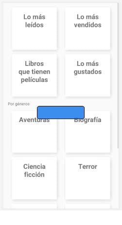
- Libros guardados: rortegag.boker.main.ui.saved_books/SavedBooksFragment.class 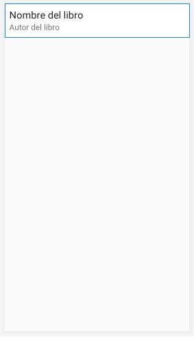
- Escanear código ISBN: rortegag.boker.main.ui.scan_code/ScanCodeFragment.class 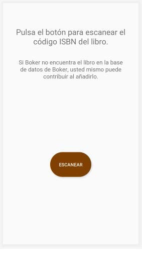
- Ver mapa:
- Ver sinopsis de un libro desconocido: rortegag.boker.main/ViewBookSynopsis.class 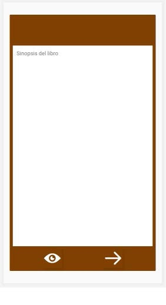
- Ver libro de la sinopsis: rortegag.boker.main/ViewBook.class
- Añadir libro: rortegag.boker.main/AddBook.class 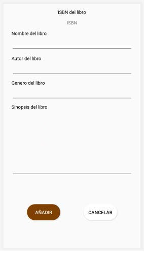
- Chat: rortegag.boker.main/BluetoothChat.class 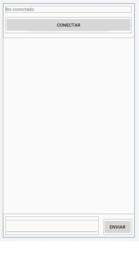

Este fragment contedrá dos CardView con información estática de libros. Estos CardView no tienen funcionalidad.
Este Fragment contendra 12 CardView, una para cada categoría, 4 principales y 8 con distintos géneros de cada libro. En pulsar en el CardView, le llevará a una Actividad llamada ViewBookSynopsis
Este Fragment contendrá un layout, que esté será un RecyclerView, que mostrará el nombre del libro y el autor del libro favoritos del usuario.
Este Fragment contendrá un botón para iniciar el escaneo del código de barras. Si el código es correcto, llevará a una Activiad llamada AddBook.
Este fragment contendrá el mapa de Google Maps, mostrando la ubicación real del usuario.
Este es la MainActivity, se irá desplazando por varios fragments de NavigationDrawner. En la Actividad, tendrá un ActionBar, con un botón de búsqueda (de momento sin funcionadidad) y otros dos con Chat (Actividad BluetoothChat) y Llamar (abrirá la App del teléfono).
En esta Actividad se mostrará un CardView grande, mostrando un largo texto de una sinopsis de un libro, elegido por el usuario, en el Fragment de Categorias. En el CardView tiene dos botones con una imagen:
Boton Ver libro: Este botón hará un intent a otra Actividad llamado ViewBook,que msotrará que libro es.
Boton Siguiente. Se llamará a sí mismo en intent y mostrará otra sinopsis de un libro.
En esta Actividad mostrará al usuario los datos del libro, como son su Título, Autor, Genero y el ISBN del libro. En el CardView, tendrá dos botones:
Botón Atrás: Terminará esta Actividad y lo mandará de vuelta al ViewBookSynopsis.
Botón Me gusta: Esté botón añadirá a favoritos este libro y se podrá ver en el fragment de Libros guardados.
En esta Actividad se podrá añadir un libro, esta Actividad es llamada cuando se escanea un código ISBN.
Esta Actividad se muestra un chat que irá por Bluetooth. El darle al botón conectar, se mostrará un layout que contendrá los dispositivos Bluetooth que encuentre.
Sprint 2
El backend de Boker es un BaaS. Este BaaS es firebase, y se utiliza para la autenticación de usuarios y la base de datos de Boker.
Firebase Authetication. La App debe tener en el gradle la
librería:
implementation 'com.google.firebase:firebase-auth:19.2.0'
Si se va a usar la base de datos Realtime de Firebase, tiene que
tener la misma versión que la de autenticación:
implementation
'com.google.firebase:firebase-database:19.2.0'
De momento la persistencia de datos se usará la Shared
Preferences. Las preferencias guardarán solamente, el ID de la
lista de libros del usuario, nombre del usuario, email del usuario
y si ya ha iniciado sesión o no.
Al registrarse el usuario SignUpScreen, mandará a Firebase el
email y contraseña en Firebase Authentication.
En el Realtime se guardará la siguiente información al registrarse:
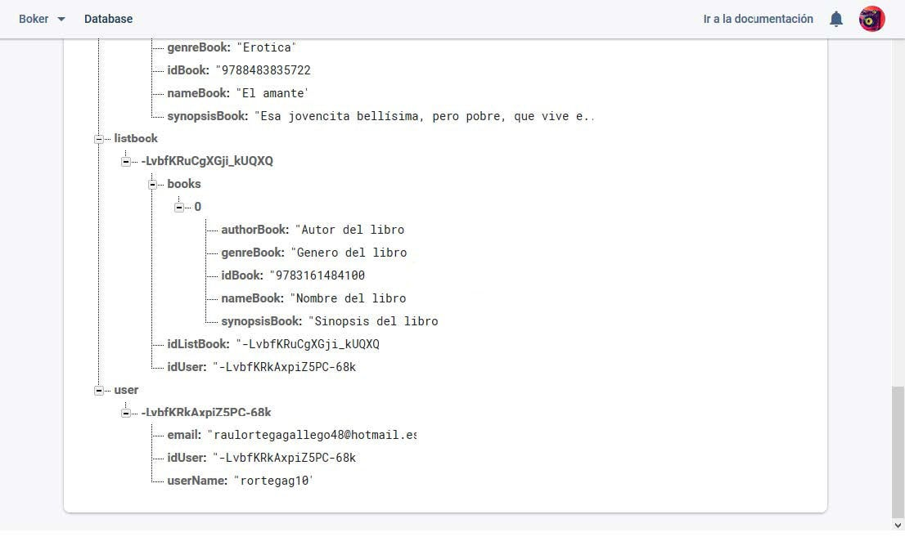En el LoginScreen, consultará los datos, buscará el email en user, obtendrá los datos de user en un Objeto User.class que está en rortegag.boker.main.models.user. El objeto se usa como un POJO, para obtener los datos que queremos.
Después consultará los datos de la lista de libros, buscará el ID del usuario código antes y mirará en listbook y obtendrá el ID de la lista.
Al registrarse, se crea un ArrayList para que cree el hijo books, con su índice y un libro de ejemplo.
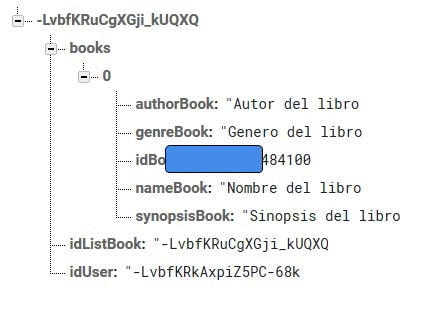Al iniciar o registrarse, en el MainActivity, en el NavigationDrawner se muestra el nombre de usuario y el email. El usuario no tendrá que volver a iniciar sesión, porque en el SplashScreen se comprueba si se ha iniciado sesión.
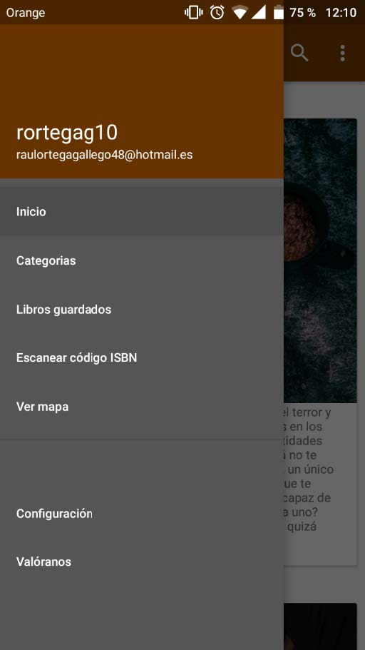 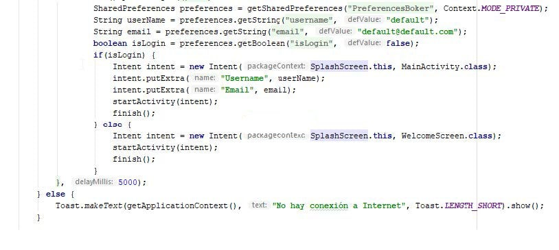En usuario, dentro de App, cuando pulsa una categoría dependiendo de que género a elegido, se muestra la sinopsis del libro.
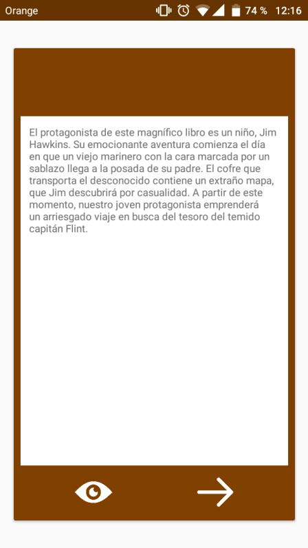Si el usuario a elegido ver el libro, cogerá la sinopsis del libro y buscará la sinopsis en Firebase. Hará una consulta y sacará los datos del libro.
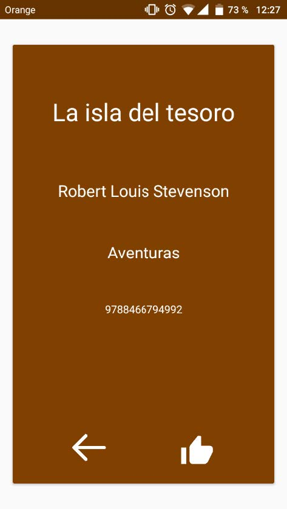Si el usuario le da Me gusta, se guardará el libro en su lista de libros. Si vamos a Libros guardados, vemos el libro favorito.
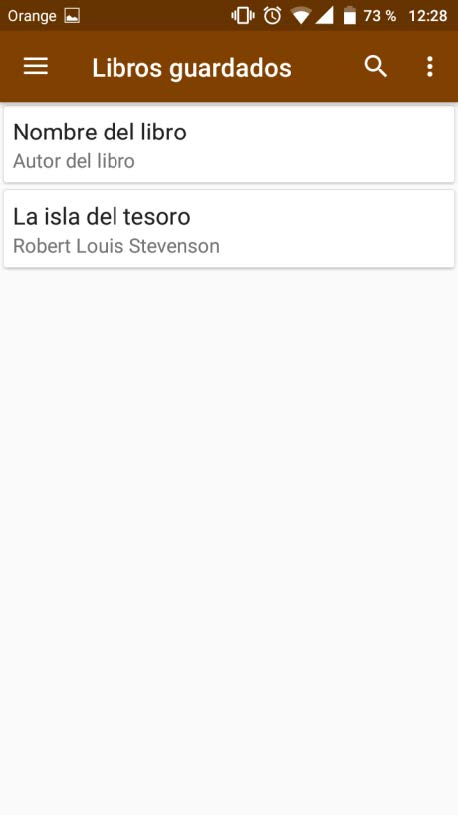
En AddBook, cuando se escanea un código, al botón de Añadir se
guarda ese libro en books.
Fuera de este documento, estará el
JSON de Firebase.
De momento, la App no tiene base de datos
local SQLite.
Sprint 3
BluetoothChat
Para acceder, debe pulsar el botón del ActionBar y luego a Chat. El desarrollo del módulo es el siguiente:
rortegag.boker.controllers/ChatController.class
En esta clase, tiene 3 hilos, uno para la mandar que ha aceptado la conexión un dispositivo Bluetooth (AcceptThread), uno para conexión de los dispositivos (ConnectThread) y otro para la lectura y escritura de datos que vienen del Bluetooth(ReadWriteThread).
private final BluetoothAdapter bluetoothAdapter;
private final Handler handler;
private AcceptThread acceptThread;
private ConnectThread connectThread;
private int state;
Todo el código está comentado de que hace cada función. rortegag.boker/BluetoothChat.class
Este es el código detrás de la pantalla de Bluetooth, también está documentado.
La App solo enviará al usuario a la Aplicación por defecto del Teléfono.
Google Maps.
En Ver mapa, cuando el usuario entre por primera vez, se le pedirá acesso a la ubicación. Si se le deniega, no podrá cargar la ubicación exacta del usuario, obvio. Si acepta, el usuario debe de entrar otra vez para entrar para ver su ubicación exacta.
El código está en rortegag.boker.main.ui.view_libraries/ViewLibrariesFragment.
Notificaciones Push.
Las notificaciones push se ha usado la tecnología de OneSignal. Se debe obtener desde OneSignal, el id para nuestra App. Hay una guía cuando te creas una cuenta de cómo agregar OneSignal al proyecto.
Agregar dependencias al Gradle.
implementation 'com.onesignal:OneSignal:[3.11.2,
3.99.99]'
En la primera línea de Gradle añadir lo siguiente.
buildscript {
repositories {
maven {
url 'https://plugins.gradle.org/m2/'}
}
dependencies {
classpath
'gradle.plugin.com.onesignal:onesignal-gradle-plugin:[0.12.4,
0.99.99]'
}
}
apply plugin: 'com.onesignal.androidsdk.onesignal-gradle-plugin'
repositories {
maven { url 'https://maven.google.com' }
}
En la línea de android, debajo de
testInstrumentationRunner añadir lo siguiente.
manifestPlaceholders = [
onesignal_app_id: 'AQUÍ DEBE DE IR NUESTRA ID DE ONESIGNAL’,
// Project number pulled from dashboard, local value is ignored.
onesignal_google_project_number: 'REMOTE' ]
Una vez hecho esto, se crea un Template.
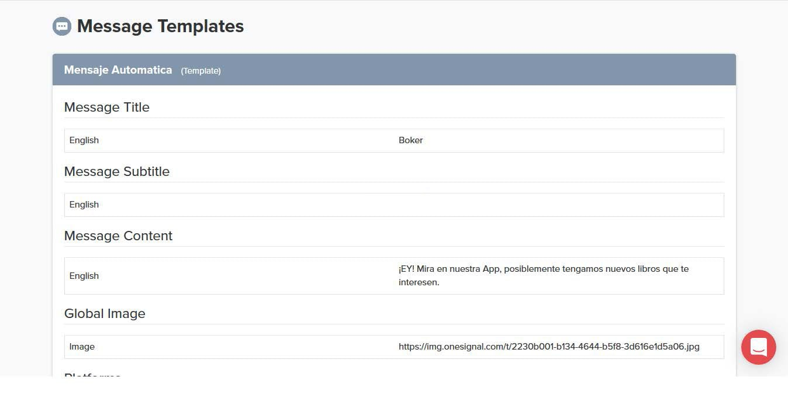Después vamos a Automated y creamos un nuevo mensaje automático
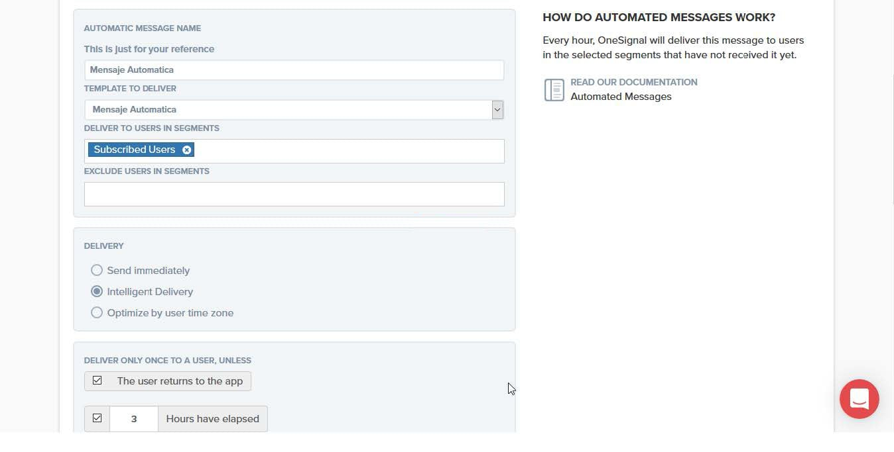Cada 3 horas, más o menos, también depende de la zona horaria del teléfono, envía el mensaje al usuario suscrito.
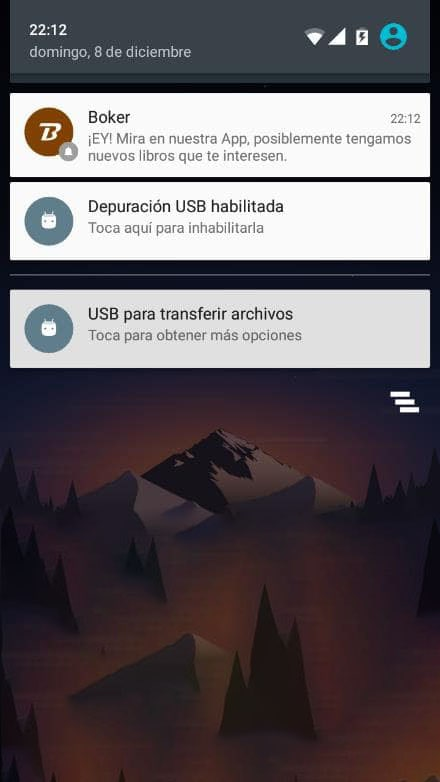Diseño
Arquitectura del sistema
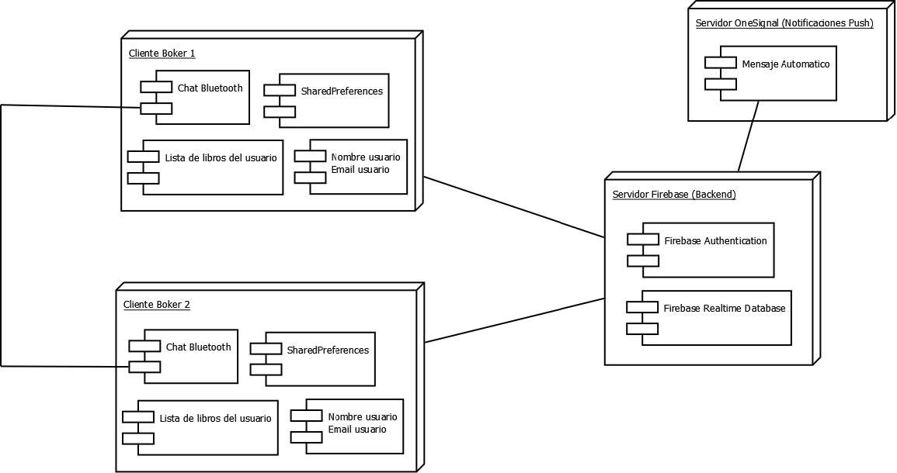Interfaz gráfica
SplashScreen. Actividad de inicio. Comprueba si tiene internet el usuario y se debe esperar 5 segundos para ir a otra Actividad. Si no se ha inciado sesión va a WelcomeScreen, si ha iniciado sesión va a MainActivity.
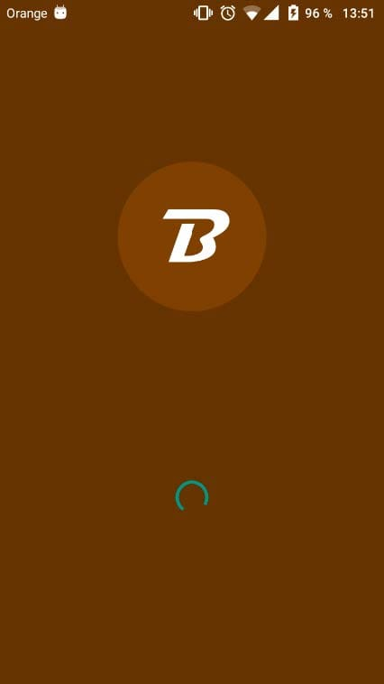WelcomeScreen. Actividad de bienvenida del usuario cuando instala por primera vez la App. El usuario puede pulsar Registrarse, que va a SignUpScreen o Iniciar sesión, que va a LoginScreen.
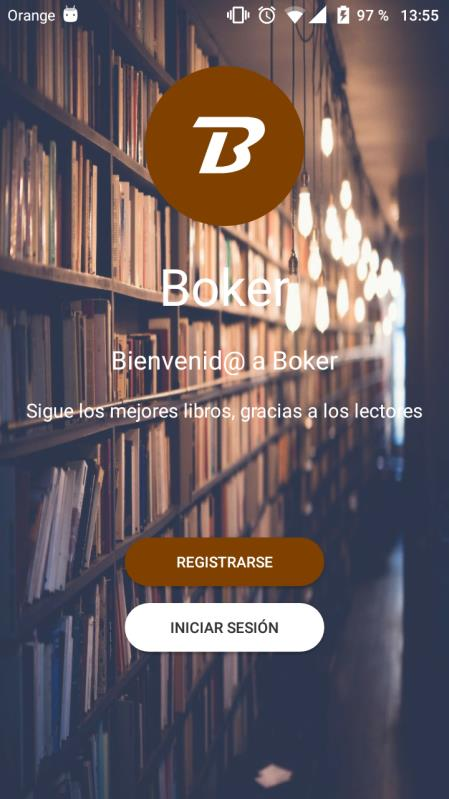SignUpScreen. Actividad para que el usuario se registre en Boker. Cuando pulse en Registrarse, le manda a MainActivity.
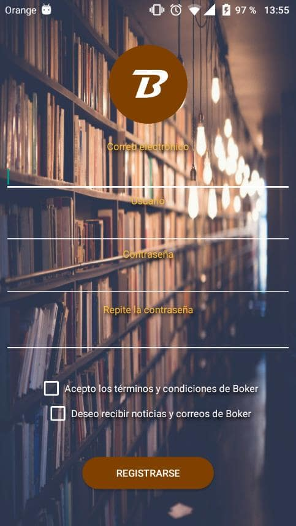LoginScreen. Actividad para que el usuario inicie sesión en Boker. Cuando pulse en Iniciar sesión, le manda a MainActivity.
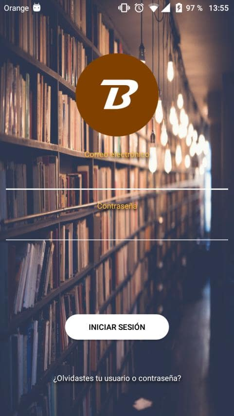MainActivity. Actividad principal de la App, que contiene un panel de navegación y la vista es por fragments. La vista del fragment de inicio es HomeFragment.
El panel de navegación es el siguiente.
HomeFragment. Vista de la App. No tiene funcionalidad.
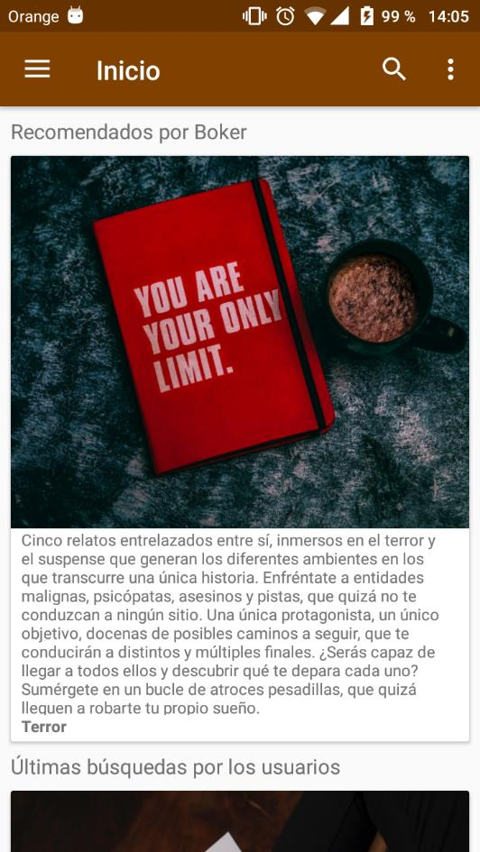CategoriesFragment. Vista de las categorías que puede elegir el usuario. Si pulsa en una, le envía a ViewBookSynopsis.
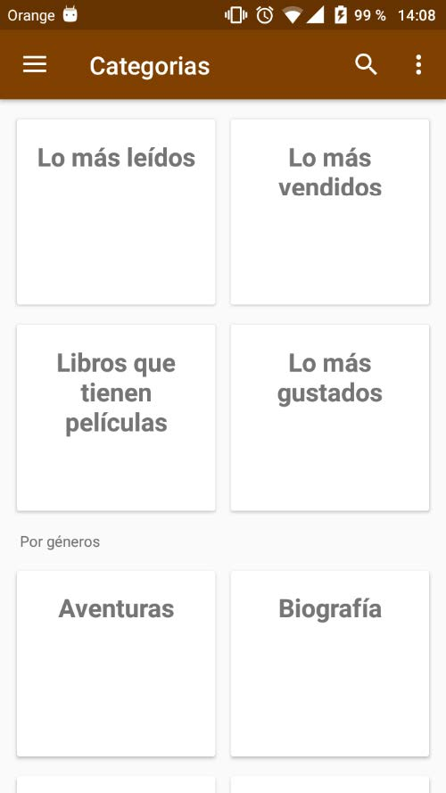ViewBookFragment. Vista de los libros favoritos del usuario.

ScanCodeFragment. Fragment con un botón para iniciar el escaneo. Si el escaneo es correcto, va a la Actividad AddBook.
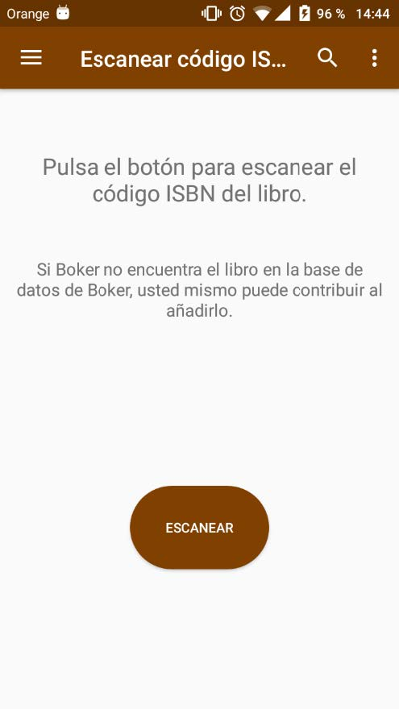ViewLibrariesFragment. Vista que usa el fragment de Google Maps y visualiza el mapa con la ubicación del usuario.
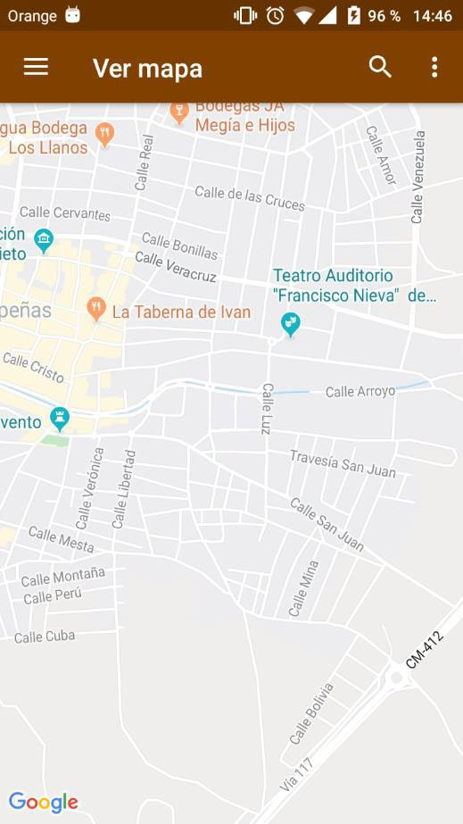ViewBookSynopsis. Actividad que muestra la sinopsis del libro, de la categoría elegida por el usuario. Si el usuario le da al botón del Ojo, se va a la Actividad ViewBook. Si le da a la fecha de siguiente, vuelve a cargar otra sinopsis.
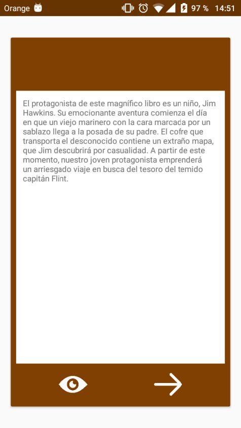ViewBook. Actividad que muestra el libro que quería ver el usuario. Si el usuario le da Atrás, termina la Actividad. Si el usuario le da Me gusta, agrega este libro al ViewBookFragment.

AddBook. Actividad que muestra el ISBN escaneado y el usuario puede agregar este libro al backend de Boker.
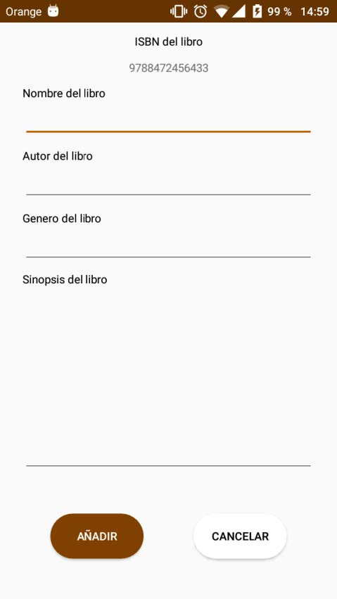BluetoothChat. Actividad para chatear con un dispositivo Bluetooth que disponga también de Boker.
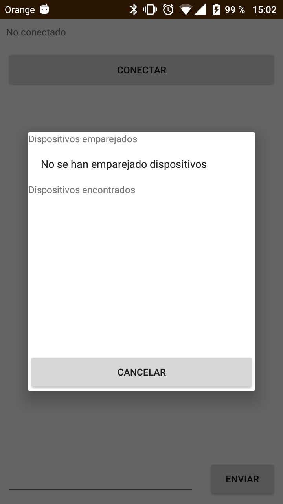Diseño de la base de datos
Descripción de la base de datos local y del backend.
Se
recomienda utilizar diagramas de clases, así como la descripción
de las diferentes relaciones y sus atributos.
La App no tiene de momento base de datos local SQLite, seguiré trabajando con la App.
El backend es un Firebase. Uso dos cosas de Firebase, Firebase Authentication para el registro y logeo de usuarios y Firebase Realtime Database, la base de datos que es un fichero JSON.
Al crear una base de datos en Realtime, debemos de establecer por defecto la reglas en true.
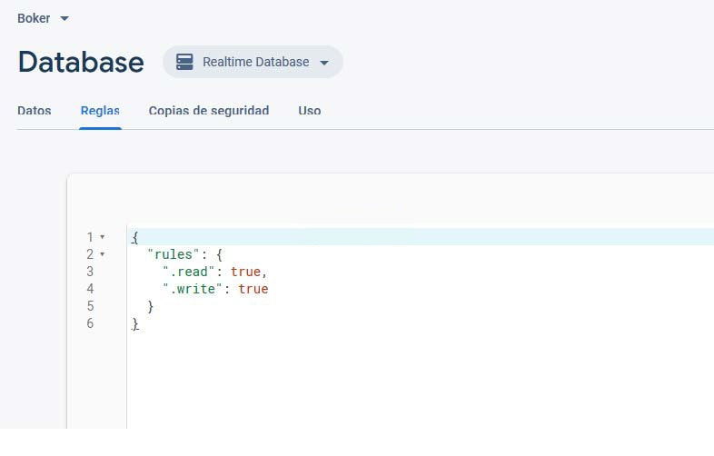Después de trabajar como será nuestro BD de JSON, cambiamos las reglas, para que puedan leer y escribir los usuarios autenticados.
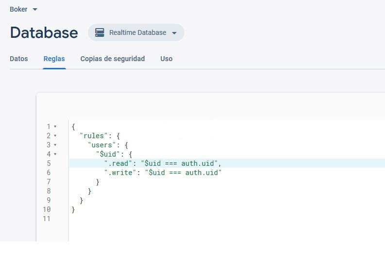Diagrama de clases
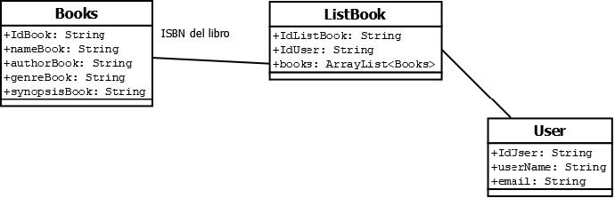Entorno de desarrollo
Android Studio ha sido el entorno de desarrollo de la App.
Servicios y librerías
Librería Firebase Authentication.
implementation 'com.google.firebase:firebase-auth:19.2.0'
Esta librería se usa en las Actividades SignUpScreen y LoginScreen.
En SignUpScreen se crear una variable de tipo FirebaseAuth
private FirebaseAuth firebaseAuth;
En el OnCreate de la Actividad, se instancia la conexión a Firebase.
firebase = FirebaseAuth.getInstance();
En una función o puede ponerse en un onClick de un botón, se utiliza la función…
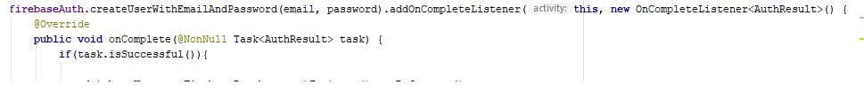En LoginScreen se utiliza lo mismo, se crea la varialbe FirebaseAuth, se instancia y se utiliza esta función para iniciar sesión en Firebase.
Librería Firebase Realtime Database.
implementation
'com.google.firebase:firebase-database:19.2.0'
Esta librería se utiliza para guardar y consultar datos del backend de Firebase. Claros ejemplos están en SignUpScreen y LoginScreen de como utilizarlos. ViewBookSynopsis, ViewBook, ViewBooksFragment y AddBook, utiliza esta librería para ello.
Se crea la variable de tipo DatabaseReference.
private DatabaseReference databaseUsers;
private DatabaseReference databaseListBooks;
Se instancia y se hace referencia a donde pondrá el punto de apoyo.
databaseUsers =
FirebaseDatabase.getInstance().getReference();
String idUser = databaseUsers.push().getKey();
User userDB = new User(idUser, userName, email);
databaseUsers.child("user").child(idUser).setValue(userDB);
Si no se pone nada en getReference, partirá por la
raíz del documento JSON. Podemos generar una clave a aleatoria de
tipo String con .push().getKey(). Si vamos a meter un
Usuario de Boker, creamos un objeto de tipo User. Este objeto se
encuentra en rortegag.boker.main.models.user/User.class
Después, con child() seleccionamos el hijo de
document(user). Dentro del hijo user, buscamos su
child(idUser), la key generada por Firebase será el
ID del usuario.
Como último ponemos setValue(userDB). Guardará los
datos ID, nombre e email. Si por alguna razón, no estuviera esos
hijos, no pasa nada, se crearán automáticamente.
En el LoginScreen, se puede ver una consulta para sacar el nombre del usuario, ya que la App solo pide email y contraseña y queremos visualizar el nombre del usuario en panel de navegación.
databaseUsers =
FirebaseDatabase.getInstance().getReference("user")
Como vemos aquí, le pongo la referencia de user.
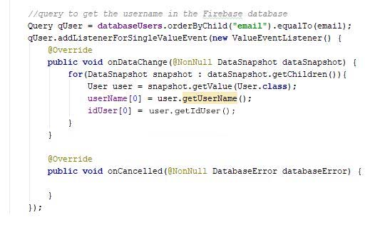
Creamos una variable de tipo Query. La consulta usamos
orderByChild(“email”), los hijos que contienen los
hijos llamados email que sean igual
.equalTo(email del usuario).
Creamos un Listener y en un bucle for, sacamos cada hijo que
contiene el campo email. Como va a sacar uno solo, saldrá
rápidamente del bucle. Debemos crear el objeto User y usar el
getValue() y dentro el Objeto que se va usar.
Estamos utilizando los objetos como POJOs, pueden guardar y sacar
datos de Firebase. Guardamos los datos en varias variables.
Librería OneSignal
implementation 'com.onesignal:OneSignal:[3.11.2,
3.99.99]'
OneSignal se ha explicado arriba.
Librería Zxing
implementation 'com.google.zxing:core:3.3.0'
Librería Google Maps
implementation
'com.google.android.gms:play-services-maps:17.0.0'
Explicado en la propia clase ViewLibrariesFragment.
Pruebas
Pruebas en varios dispositivos
Se hará pruebas en 3 dispositivos reales, 1 que no cumpla la función de resolución de pantalla, que puede ocasionar y 2 dispositivos normales que cumplen y ver discrepancias.
Dispositivos utilizados
Vodafone VFD 600 (Smart Prime 7)
Informe de pruebas
Vodafone VFD 600
Este dispositivo es el que ha hecho las pruebas de la App. Se pueden ver los pantallazos en el apartado Interfaz gráfica.
LG K7
Este dispositivo no cumple la resolución óptima para la App. Pantallazos siguientes.
Samsung Galaxy J3 (2016)
Dispositivo que cumple con los requisitos.
Conclusiones
Conocimientos adquiridos
Android Studio te da muchas herramientas desarrollo para las interfaces de Android.
Usar librerías de terceros te ayuda mucho a ahorrarte trabajo en desarrollar, por ejemplo, el escaneo de código de barras o las notificaciones push.
Como Gradle te ayuda a agregar todas esas librerías, incluso te dice cuando hay una nueva versión disponible de esa librería.
Mejoras futuras
Hacer una base de datos local con SQLite, mejorará muchísimo los accesos al backend, haciendo que se conecte menos al backend para solamente obtener un dato, como es el caso de la Actividad de mostrar la sinopsis del libro.
Si se agrega la base de datos, habrá que cifrarla.
Se debería comprobar si el dispositivo está hackeado o tiene root, para que el usuario no pueda acceder a la base de datos o ficheros de la App.
Agregar más notificaciones push cuando se agregue un libro nuevo al backend.